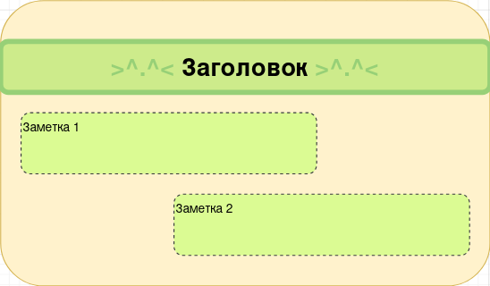
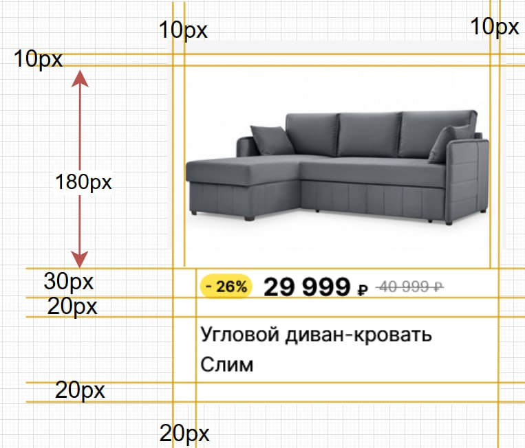
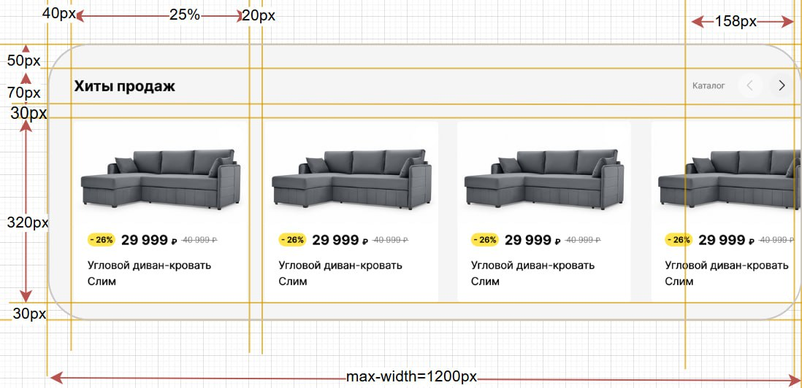

Воспроизведите макет с изображения, используя свойства float и content.

Повторите шаблон с изображения, но на этот раз примените свойство box-sizing: border-box для упрощения расчетов.
Обратите внимание, что карточка последнего товара выпадает из родительского блока.
Данное отображение можно задать с помощью свойств overflow и margin.


Создайте два контейнера и исследуйте схлопывание внешних отступов между ними при разных комбинациях значений:
Проанализируйте поведение отступов в каждом случае. Примените различные CSS-свойства для предотвращения схлопывания отступов.